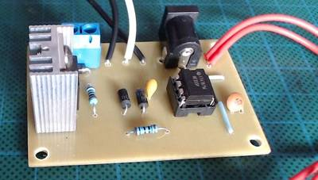

2016-09-01 - Nº 70

Editorial
Esta é a Newsletter Nº 70 que se apresenta com o mesmo formato que as anteriores. Se gostar da Newsletter partilhe-a!
Todas as Newsletters encontram-se indexadas no link.
Esta Newsletter tem os seguintes tópicos:
Esta semana a SpaceX estava a preparar mais um lançamento e o foguetão Facon 9 explodiu a dias do lançamento destruindo o satélite do Facebook internet.org. A universidade de Princeton apresentou um novo desenho de computador que irá permitir acelerar o desempenho dos Data Centers. O Chip designado por "Piton" tem 25 cores e ocupa um espaço de 6 x 6 milímetros tendo cerca de 460 milhões de transístores. A Intel anunciou a 7ª geração dos seus Cores. Esta, baseada na tecnologia de 14nm, aumenta o desempenho destes processadores e introduz um novo motor de multimédia que permite o processamento de conteúdos 4K UHD. Por fim, foi anunciado o suporte oficial de Docker para o Raspberry Pi. A imagem do Raspbian Jessie foi oficialmente acrescentada e é possível neste momento usar o Raspberry Pi para correr este tipo de contentores.
Na Newsletter desta semana apresentamos diversos projetos de maker assim como alguns modelos 3D que poderão ser úteis.
 João Alves ([email protected])
João Alves ([email protected])
O conteúdo da Newsletter encontra-se sob a licença  Creative Commons Attribution-NonCommercial-ShareAlike 4.0 International License.
Creative Commons Attribution-NonCommercial-ShareAlike 4.0 International License.
Novidades da Semana ^
New microchip demonstrates efficiency and scalable design
"Princeton University researchers have developed a new computer chip that promises to boost the performance of data centers that lie at the core of numerous online services such as email and social media. The chip called "Piton" after the metal spikes driven by rock climbers into mountainsides to aid in their ascent was presented Aug. 23 at Hot Chips, a symposium on high-performance chips held in Cupertino, California. Data centers essentially giant warehouses packed with computer servers support cloud-based services such as Gmail and Facebook, as well as store the staggeringly voluminous content available via the internet. Yet the computer chips at the heart of the biggest servers that route and process information often differ little from the chips in smaller servers or everyday personal computers." [...]
7th Gen Intel Core
"7th Generation Intel Core is the newest family of processors for 2 in 1s and laptops. 7th Gen Intel Core extends the benefits of Intels industry leading 14nm process technology, delivering even more performance. It also introduces a new media engine that opens up a new world of premium 4K UHD content for viewing, streaming, creating and sharing. The result is new PCs that have incredible performance and responsiveness, richer visuals with better integrated graphics, more refined and expanded user experiences, longer battery life, and the ability to take full advantage of the immersive internet. With more than 100 new thin, light and stylish designs expected this fall and holiday shopping season, there has never been a better time to buy a new PC." [...]
Docker comes to Raspberry PI
"If youre not already familiar with Docker, its a method of packaging software to include not only your code, but also other components such as a full file system, system tools, services, and libraries. You can then run the software on multiple machines without a lot of setup. Docker calls these packages containers. Think of it like a shipping container and youve got some idea of how it works. Shipping containers are a standard size so that they can be moved around at ports, and shipped via sea or land. They can also contain almost anything. Docker containers can hold your softwares code and its dependencies, so that it can easily run on many different machines. Developers often use them to create a web application server that runs on their own machine for development, and is then pushed to the cloud for the public to use." [...]
Mark Zuckerberg is Deeply Disappointed SpaceX Blew Up His $95 Million Satellite
"SpaceXs Falcon 9 rocket exploded in Cape Canaveral this morning. On board was Facebooks Internet.org satellite, which experts estimated cost $95 million. In a post on Facebook, CEO Mark Zuckerberg said he was deeply disappointed. From Zucks post: As Im here in Africa, Im deeply disappointed to hear that SpaceXs launch failure destroyed our satellite that would have provided connectivity to so many entrepreneurs and everyone else across the continent. Fortunately, we have developed other technologies like Aquila that will connect people as well. We remain committed to our mission of connecting everyone, and we will keep working until everyone has the opportunities this satellite would have provided." [...]
Outras Noticias
- Microsoft sheds some light on its mysterious holographic processing unit
- Facebook is giving away the software it uses to understand objects in photos
- Fujitsu Semiconductor and Mie Fujitsu Semiconductor License Nantero's NRAM And Have Begun Developing Breakthrough Memory Products for Multiple Markets
- Intel Quietly Launches Apollo Lake SoC: Goldmont CPU, 6 SKUs, 6 & 10 Watts
- Baidu open sources its deep learning platform PaddlePaddle
Ciência e Tecnologia ^
New method developed for producing some metals
"The MIT researchers were trying to develop a new battery, but it didnt work out that way. Instead, thanks to an unexpected finding in their lab tests, what they discovered was a whole new way of producing the metal antimony and potentially a new way of smelting other metals, as well. The discovery could lead to metal-production systems that are much less expensive and that virtually eliminate the greenhouse gas emissions associated with most traditional metal smelting. Although antimony itself is not a widely used metal, the same principles may also be applied to producing much more abundant and economically important metals such as copper and nickel, the researchers say. The surprising finding is reported this week in the journal Nature Communications, in a paper by Donald Sadoway, the John F. Elliott Professor of Materials Chemistry; postdoc Huayi Yin; and visiting scholar Brice Chung." [...]
Designing Ultrasound Tools with Lego-Like Proteins
"Ultrasound imaging is used around the world to help visualize developing babies and diagnose disease. Sound waves bounce off the tissues, revealing their different densities and shapes. The next step in ultrasound technology is to image not just anatomy, but specific cells and molecules deeper in the body, such as those associated with tumors or bacteria in our gut. A new study from Caltech outlines how protein engineering techniques might help achieve this milestone. The researchers engineered protein-shelled nanostructures called gas vesicleswhich reflect sound wavesto exhibit new properties useful for ultrasound technologies. In the future, these gas vesicles could be administered to a patient to visualize tissues of interest. The modified gas vesicles were shown to: give off more distinct signals, making them easier to image; target specific cell types; and help create color ultrasound images." [...]
Graphene key to two-dimensional semiconductor with extraordinary properties
"A newly discovered method for making two-dimensional materials could lead to new and extraordinary properties, particularly in a class of materials called nitrides, say the Penn State materials scientists who discovered the process. This first-ever growth of two-dimensional gallium nitride using graphene encapsulation could lead to applications in deep ultraviolet lasers, next-generation electronics and sensors." [...]
Major next steps for fusion energy based on the spherical tokamak design
"Among the top puzzles in the development of fusion energy is the best shape for the magnetic facility or bottle that will provide the next steps in the development of fusion reactors. Leading candidates include spherical tokamaks, compact machines that are shaped like cored apples, compared with the doughnut-like shape of conventional tokamaks. The spherical design produces high-pressure plasmas essential ingredients for fusion reactions with relatively low and cost-effective magnetic fields. A possible next step is a device called a Fusion Nuclear Science Facility (FNSF) that could develop the materials and components for a fusion reactor. Such a device could precede a pilot plant that would demonstrate the ability to produce net energy." [...]
Modelos 3D ^
Com a disponibilidade de ferramentas que permitem dar azo a nossa imaginação na criação de peças 3D e espaços como o thingiverse para as publicar, esta rubrica apresenta alguns modelos selecionados que poderão ser úteis.
The 3D Printed Marble Machine #3
"The 3D Printed Marble Machine #3 - Designed by Tulio Laanen. The new 3D printed marble machine we have all been waiting for! Please consider making a donation if you want to support me and my work." [...]
Hex Shelf
"Inspired by the charming design of "Moidules", I create another ones for assembling the hex shelf. It just meets my personal needs to store up my more and more 3d printing things. Hope you can make your own and enjoy it." [...]
Customizable Drill Bit Handles
"I made these for drilling out holes in 3D printed parts." [...]
Arduped 2
"Arduped 2 is a tweaked version of David Ultis's Arduped Biped Robot (http://www.thingiverse.com/thing:19594) that includes source code by Gabriel Ro-Bot-X and Kai Neugebauer to make it work. I redesigned the build platform and head sensor and tweaked the feet, but I left the original legs alone because they worked just fine. The OpenSCAD source files for these changes can be found in the zip file called "OpenScad Files with Utils Folder.zip". Here is a video of it in action: http://youtu.be/PAQJ-nnLGbg" [...]
Projetos Maker ^
Diversos Projetos interessantes.
ARCade Reactor - RetroPie Gaming and Media System
"As a young boy I grew up playing some of the classic computers like the BBC, Atari ST and the Amiga 500, later moving onto consoles like the SNES and the PlayStation. While the modern generation of gaming consoles and high-end PC's provide a graphically rich experience, there is a charm about the older games that you don't tend to get these days. Maybe it's just nostalgia, but they offer something that is often forgotten in the current generation.. games built purely around gameplay! Some of the older games can be so much fun and so immersive to play, the visuals become secondary to the whole experience. Wanting to find out if my fond memories of classic games were nothing more than rose tinted nostalgia or if they really were that awesome, I decided to build a Retro gaming console and revisit the past. I wasn't stopping there though, this is not only a Retro gaming system but also a Media player. To keep things as cheap, simple and as light-weight as possible I opted to build it with Raspberry Pi using RetroPie, Emulation Station and Kodi. The whole thing is enclosed in one of the most iconic games consoles of all time, Nintendo's Entertainment System (NES). To put a little extra polish and shine on the overall look I decided to paint the enclosure in the colour scheme of the Marvel Comic Hero Iron Man, this lead to the system being dubbed the ARCade Reactor(did you see what I did there?). As an added bonus the system also supports the use of original NES controllers, this adds a real sense of authenticity to the whole retro gaming thing." [...]
The BeagleBone's I/O pins: inside the software stack that makes them work
"The BeagleBone is a inexpensive, credit-card sized computer with many I/O pins. These pins can be easily controlled from software, but it can be very mysterious what is really happening. To control a general purpose input/output (GPIO) pin, you simply write a character to a special file and the pin turns on or off. But how do these files control the hardware pins? In this article, I dig into the device drivers and hardware and explain exactly what happens behind the scenes. (Various web pages describe the GPIO pins, but if you just want a practical guide of how to use the GPIO pins, I recommend the detailed and informative book Exploring BeagleBone.) This article focuses on the BeagleBone Black, the popular new member of the BeagleBoard family. If you're familiar with the Arduino, the BeagleBone is much more complex; while the Arduino is a microcontroller, the BeagleBone is a full computer running Linux. If you need more than an Arduino can easily provide (more processing, Ethernet, WiFi), the BeagleBone may be a good choice." [...]
Building an Audio Amplifier
"A general purpose audio amplifier is very handy in many projects that are related to audio. This project, which can be completed within a few hours, is a more advanced version of the simple LM386 based amplifiers projects normally found as provides a safe connection to external devices (e.g., smartphones, PCs etc.) and provides a x200 gain which allows you to connect weak audio sources (like headset sockets) to speakers. The circuit is based on the LM386 IC (see specs) and supports a single channel (mono)." [...]
Octopus, a tentacular shield for Arduino and Fishino
"Arduino boards and compatible alternatives are really easy use and o powerful, capable of making countless applications, but they suffer from two strong limitations: the relatively small program memory and the limited number of available outputs, especially when coming to PWM signals. For example, the Arduino / Fishino ONE has only six PWM outputs and, unless you generate the related signals via software (with considerable processor load), you can control one driver only, i.e. a single RGBW power LED or alternatively six monochromatic LEDs. This limitation becomes painfully evident when you want to drive more than 6 servo-motors with a single board: moving a hexapod robot type, which requires 12 servomotors, is impossible. Digital inputs and outputs are limited too; always talking about Arduino boards, we have a total of 13 digital I / O and 6 analog inputs (those can also be used as digital). The total number can be judged as sufficient for many uses, but you have to consider that many of these are used by onboard devices or by expansion shields. In practice, if you make a project with an Ethernet/WiFi shield, a SD memory, a serial port and some analog inputs, you have only six digital I / O left, that are often insufficient to medium complexity projects. For all these reasons we have decided to design an expansion shield, compatible with all Arduino boards and with our Fishino UNO (and Fishino Mega that well launch soon) that almost without consuming hardware resources provides 16 PWM outputs and 16 additional digital inputs/outputs. In addition, you can connect up to 8 shields, giving Arduino up to 128 PWM and I/Os, that can be managed in a total transparent way by the user through a specific library." [...]
Joule Thief With Ultra Simple Control of Light Output
"The Joule Thief circuit is an excellent entre for the novice electronic experimenter and has been reproduced countless times, indeed a Google search yields 245000 hits! By far the most frequently encountered circuit is that shown in Step 1 below which is incredibly simple consisting of four basic components but there is a price to be paid for this simplicity. When powered with a fresh battery of 1.5 Volts light output is high with commensurate power consumption, but with lower battery voltage the light and power consumption drop away until at around half a Volt light output ceases." [...]

12V NE555 PWM Controller Under $3
"While making my mini table saw I bought a 12 V motor speed controller module from eBay. Fair enough, I thought ... that was an easier and straight forward solution. But then I decided to make my own. I did some hunting around on the interweb and found a pretty good starting point in Circuits Today, but then, I needed to make some modification and tweaking of the circuit. I wanted to add in a toggle switch, a DC power socket and a 2 pin screw terminal into the design to make it easier to make and use." [...]
Interfacing HD44780 based LCDs with STM32 MCUs
"In this article I will discuss my small library for interfacing hd44780 based alphanumeric LCD module with latest STM32F0 series of 32 bit ARM based MCUs. I have used Keil uVision 5 IDE for compilation of this project. This library depends on new HAL libraries from ST. For those who are familiar with STM32 Std Peripheral library, this HAL lib is newer library equivalent to Std Peripheral library recommended by ST for newer projects. This project is for STM32F051C8 chip which is a member of access line of STM32F0 series. This chip has 48 pins and 64KB flash memory, costs less than US$2! This makes it perfect for all kind of small projects where we used Atmel AVR 8 bit MCUs." [...]
Programmable Arduino DIY Guitar pedal tutorial
"This DIY Guitar Pedal project is aimed for guitarists, hackers and programmers that want to learn about digital signal processing, effects, synthesizers and experiment without deep knowledge on DSP, electronics or hardcore programming. pedalSHIELD UNO is a lo-fi programmable guitar pedal that works with the Arduino UNO / Genuino UNO Board and is Open Source & Open Hardware. Learn to create your own programmable DIY Guitar Pedal and add effects such as distortion, fuzz and more to your music. You can program your own effects in C/C++ or even use the ready-to-play effects from the online forum we have set up to support this project." [...]
Linear Motion by Rack and Pinion
"A rack and pinion mechanism can generate a linear motion, which can be adapted into a variety of whimsical craft ideas. Build a simple linear mechanical movement and apply into your own kinetic craft. I used paper-like materials (illustration board and cardboard) which are relatively cheap and easy to handle." [...]
Arduino Controlled Seed Incubator
"I bought a couple of Carolina Reaper chili seeds. The first batch was a failure only one seed germinated but it died. So I ordered another 10 seeds, this time i'm a bit more prepared. I think previously they didn't germinate because the temperature was wrong and I started them just before summer when it was still a bit cold. This incubator will keep the temperature around 29 degrees Celsius, between 28 and 30. Its very basic all you need is a temperature sensor, Some nichrome heating wire which can be found in most fan heaters and hairdryers and offcoarse you will need an arduino." [...]
Android Arduino bluetooth RC car
"The Arduino is open-source hardware, based on a simple board with inputs and outputs, analog and digital, in a development environment that is based on the programming language processing. It is a device that connects the physical world with the virtual world, or the analogue world with the digital. Android is a mobile operating system (OS) currently developed by Google, based on the Linux kernel and designed primarily for touchscreen mobile devices. In this project we link this two platform and make another hardware." [...]
ATX based Lab power supply - 10th year anniversary edition
"I had published an ATX lab supply conversion about 10 years ago. It inspired a lot of folks to take their first steps in hobby electronics through that instructable. And now there are many many examples of people doing the ATX conversion on youtube, instructables, etc. My original ATX conversion got packaged more professionally with an added ampmeter which was really useful to have. In the 10 years since access to cheap electronics modules on ebay, Amazon ... has improved by leaps and bounds. I had used one of these variable power supply modules in making a nice little variable power supply but this only supplied 25W. I was toying with the idea of adding higher voltage to my old ATX conversion, at least to 40V. I ordered two of these power boost power supply modules through ebay at approx $10 each with specs of settable constant current and voltage to 60V with a low volt input. At the same time I also ordered a low voltage variable supply module and some of those incredible littlle volt-amp meters." [...]
1hz to 30khz wave generator using Arduino
"Wave generator is one of the most needed tools in our electronics labs, you can buy a fully functional ready made one or make a simple one using your Arduino." [...]
Arduino Clap-On Lights - Introduction to Relays
"Everyone knows about clap-on lights, or "clappers". I've always wanted one and my personal philosophy is that the best way to get what you want is to make it yourself. Making clap-on lights is easy with Arduino. What's more, it gives you the chance to make a simple project with a relay. Knowing how to incorporate relays into your projects opens up a whole new world of what you can do with your Arduino. Without going into too much detail, relays are electromechanical devices that allow you to use a relatively low amount of power (like the 5V from an Arduino pin) to control the switch of relatively high currents or voltages (lamps, motors, heaters, AC circuits, etc.). There are a number of different types of relays, but at their heart they all perform this function. The relay I used for this project is from Ebay(check here), I didn't know much about it besides it said that it could be used with Arduino (5V control) and it could handle up to 250VAC. Shop around, I got mine for under a dollar. My favorite thing about this project was how easy it was to use the relay." [...]
Making Your Own Infrared Controller With Arduino
"Have a robot that would benefit from a customized controller? Tiny remotes not doing your project justice? Maybe your project would benefit from the use of joysticks instead of itty bitty buttons? In this instructable, we will be making our own Infrared Controller with two joysticks, two face buttons, and two trigger buttons that you can use to control just about anything with an infrared receiver! Let's get going!" [...]
Arduino Breathalyzer
"What is a breathalyzer you may ask? It is a device for estimating blood alcohol content (BAC) from a breath sample.In simple terms it is a device to test weather a person is drunk or not. As the title suggests it runs on the arduino.Our breathalyzer uses the MQ-3 alcohol sensor from sparkfun.It is a simple and fun to do project. This instructable explains how to create your own breathalyzer , making a shield for the arduino , putting the breathalyzer in a box, and making some changes to your breathalyzer." [...]
Control Your Home Appliances Using Arduino And Relay
"Hello everyone, In this instructable we will be using Arduino And Relay module to control home appliances." [...]
Budget off-grid automatic watering with solar panels
"This instructable includes solar panels powering water pump, Arduino and all electronics under or about $30. The system waters up to 6 planters." [...]
Pi Zero Peep Hole Camera
"What follows is are the details of my peep hole webcam built with a Raspberry Pi Zero. I live in a large NYC apartment building and am regularly curious about sounds I hear coming from the hallway, and wish I had an eye outside from my desk. I have successfully used this webcam peep hole rig to identify The Hallway Whistler, among other mysteries. Using the motion detection, one could configure such a system to automatically take/upload photos and videos of door events. But I'm no Linux expert-- I largely followed Tony D's Cloud Cam tutorial on Adafruit for the software configurations required!" [...]
Build a Persistence-of-Vision LED Globe
"Maybe youve seen a persistence-of-vision (POV) illusion before: an array of bright LEDs on the spokes of a spinning bicycle wheel that magically paints colorful animations, light effects, and messages in the night. These visual effects are always good for a Wow! but well go them one better and build a 3-dimensional illusion: the POV Globe. The term persistence of vision refers to a phenomenon of human vision: a light stimulus lingers as an aftereffect on the retina for about 1/10 of a second. When light stimuli are sequenced in rapid succession, they merge into one continuous image. Scientists still argue how much of this phenomenon is shared between the eye and the brain, but the effect is real in fact its the basis for film and television." [...]
Robotized Trashcan
"This project is about robo trashcan, that will open its cap if you pass your hand above it. The trashcan will open its cap for 10 seconds ifyou place your hand from 10 to 30 centimeters above the cap, and for 3 seconds if your hand will be at the distance from 30 to 70 centimeters. This mode is for fast throwing things out. Also trashcan has a switch for service. So cap is open while switch is pressed. The brain of all system is arduino, so you can change all distances and times very easy, editing the sketch. The - it is a bucket for detergent. Sensor is cheap range ultrasonic sensor for arduino, and actuator is servo motor, all these components Ive bought very cheap on aliexpress, links in the video's description. The connection rod I will make of paper clip" [...]
Servo control with microchip microcontroller
"In this instructable I want to show you how to control a servo using a microcontroller (18F2550) and how to avoid using an unknown library to control a servo." [...]
ICS501 Simple Frequency Multiplier
"Today I made a high frequency multiplier using a single component: the ICS501 PLL clock multiplier IC. This chip provides 2x, 5x, 8x (and more) clock multiplication using an internal phased-lock loop (PLL). At less than a dollar on eBay, $1.55 on mouser, and $0.67 on Digikey, they dont break the bank and Im glad I have a few in my junk box! I have a 10MHz frequency standard which I want to use to measure some 1Hz (1pps) pulses with higher precision, so my general idea is to use a frequency multiplier circuit to increase the frequency (to 80 MHz) and use this to run a counter IC to measure the number of clock pulses between the PPS pulses. I spent a lot of time working with the CD4046 micro-power phased lock loop IC which has a phase comparator and a voltage controlled oscillator built in. It seemed this chip was the go-to for many years, but it requires external circuitry (ICs in my case) to divide by N and is intended to adjust a VCO output voltage based on the phase difference of two different inputs. Although I made some great progress using this chip, I found a few SMT ICS501 ICs in my junk box and decided to give them a try. I was impressed how easy it was to use! I just fed it 5V and my clock signal, and it output 8x my clock signal! Since I dont have my 10MHz reference frequency running at the moment, I tested it with a 1MHz canned oscillator. It worked great, and was so easy! Ill definitely be using this chip to multiply-up crystal oscillator frequencies to improve the precision of frequency counting." [...]
No Pump Automatic Watering!
"In this instructable I'm going to show you how you can make your very own automatic plant watering system. The best part? This solution requires no pump! The benefit of using an automatic watering system is that you avoid having your plants start to dry out, and you also wont accidentally soak your plants. The moisture is kept at the perfect level for your plants and you end up using less water! There's a lot of different automatic watering systems out there. These seem to work great however there has always been something preventing me from building them. They all require a pump. Personally I would prefer not to use a pump because I think they are expensive and makes a lot of noise. I went to the drawing board to see if I could come up with something different! This system uses a micro controller and soil sensor to monitor the water level of your plants. If your soil is starting to dry out the controller will counter this by watering the soil until it is sufficiently moist again. Instead of using a costly and noisy water pump, we are going to use a servo to elegantly open and crimp a water tube. So cheap. So easy." [...]
That's all Folks!